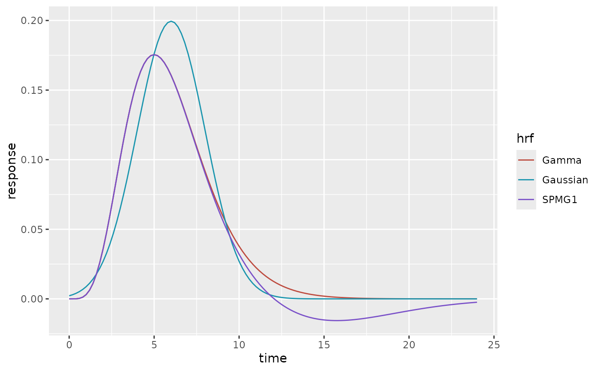

Discrete colour and fill scales built on hrf_palette(). Use them in your
own ggplot2 figures to match the output of plot_hrfs() and
plot_regressors().
Arguments
- type
Either
"categorical"or"ordered"; seehrf_palette().- ...
Further arguments passed to
ggplot2::discrete_scale(), such asname,labels, orguide.- aesthetics
The aesthetics the scale applies to.
Examples
if (requireNamespace("ggplot2", quietly = TRUE)) {
t <- seq(0, 24, by = 0.2)
df <- data.frame(
time = rep(t, 3),
response = c(HRF_SPMG1(t), HRF_GAMMA(t), HRF_GAUSSIAN(t)),
hrf = rep(c("SPMG1", "Gamma", "Gaussian"), each = length(t))
)
ggplot2::ggplot(df, ggplot2::aes(time, response, colour = hrf)) +
ggplot2::geom_line() +
scale_colour_hrf()
}
